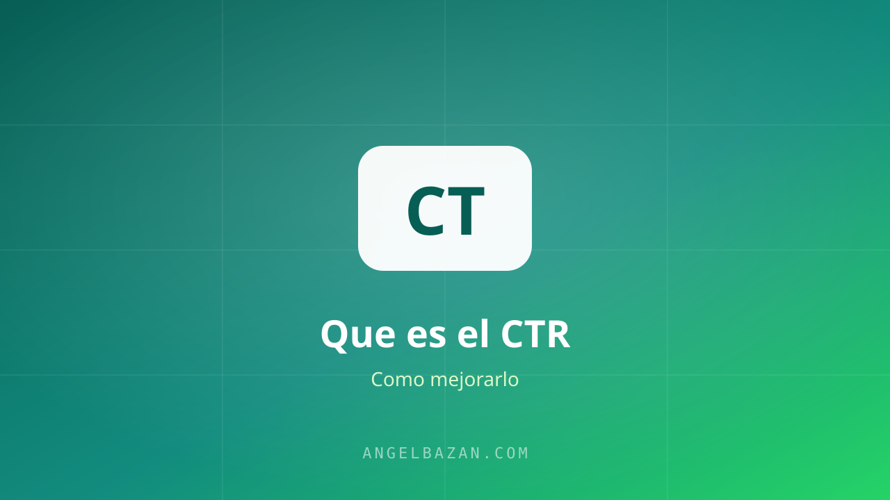

CTR: qué es, cuál es un buen porcentaje y cómo mejorarlo
Qué es el CTR en Meta Ads, cuál es un buen porcentaje según tu objetivo y 7 formas prácticas de mejorarlo.
En este artículo
El CTR (click-through rate) mide cuántas personas hicieron clic en tu anuncio entre las que lo vieron. Es el termómetro de tu mensaje: un CTR bajo significa que tu anuncio no conecta con quien lo ve, y no importa cuánto inviertas.

Qué es el CTR
CTR = Clics ÷ Impresiones × 100. Si tu anuncio se mostró 10.000 veces y recibió 200 clics, tu CTR es 2%. Simple — pero interpretarlo bien cambia todo.
Cuál es un buen CTR
- Feed de Facebook (página de destino): 1-2% es sano; 2.5%+ es excelente.
- Historias y Reels: 0.5-1.5% es normal (el CTR es menor, el costo también).
- Mensajes a WhatsApp: los CTRs son más altos porque el CTA es directo.
Compara tu CTR contra el benchmark de tu formato y objetivo, no contra el de otro negocio. La referencia exacta está en tu Ads Manager, por campaña.
Por qué importa (y por qué no es todo)
Un CTR alto baja tu costo por clic y le dice al algoritmo que tu anuncio es relevante. Pero cuidado: un CTR alto con ventas nulas es un anuncio entretenido, no un anuncio vendedor. El CTR mide el gancho; la conversión mide el embudo. Las dos se optimizan por separado.
7 formas de mejorarlo
- Gancho en los primeros 2 segundos del video.
- Un titular que hable del cliente, no de ti.
- Imagen con texto mínimo: el mensaje va en el copy.
- Prueba social visible en el creativo.
- CTA específico ("Escríbeme hoy" supera a "Más información").
- Segmenta menos: públicos amplios suelen dar mejores CTRs.
- Testea 3-5 variaciones y deja que el algoritmo elija (la estructura completa aquí).
Errores comunes que matan tu CTR
Muchas veces el CTR no sube porque el problema no es el anuncio, sino cómo se entiende la métrica. Estos son los fallos que veo una y otra vez en cuentas ajenas y en las mías:
- Optimizar el CTR equivocado: en Ads Manager hay CTR (todos los clics), CTR de enlace y CTR fuera de la plataforma. Para ventas, el que importa es el de enlace; los clics a "me gusta" o a la reacción inflan la métrica y engañan.
- Copiar anuncios ganadores de otro mercado: el ángulo que funcionó en México puede no conectar en España o Perú. El mensaje se prueba localmente, siempre.
- Ignorar el formato de entrega: un buen CTR en Reels no significa lo mismo que en el feed de Facebook; cada formato tiene su benchmark. Compárate siempre contra tu propio histórico por formato.
- Pausar demasiado rápido: decidir con 300 impresiones es leer ruido. Dale al anuncio mínimo 2.000-3.000 impresiones antes de sentenciarlo.
Para encontrar mensajes que sí conectan, espía a la competencia con la Biblioteca de Anuncios de Meta y mide tus enlaces correctamente con el constructor de UTM. Y cuando el CTR esté sano, el siguiente paso es que el clic llegue a un mensaje que convierta: los titulares se trabajan como se explica en cómo escribir titulares que venden.
Preguntas frecuentes
¿Qué CTR se considera bueno en 2026? Depende del formato y del objetivo. En el feed de Facebook un 1-2% es saludable; en historias y Reels un 0.5-1.5% es normal; en anuncios de mensajes a WhatsApp los CTR suelen ser más altos porque el CTA es directo. Usa tu histórico como referencia principal.
¿Un CTR alto garantiza ventas? No. El CTR mide el gancho, no el embudo. Puedes tener un CTR excelente y ventas nulas si la landing no convence o el precio no acompaña. Optimiza CTR y conversión como dos frentes separados.
¿Por qué mi CTR bajó de golpe? Las causas típicas: fatiga del anuncio (la misma gente lo ve demasiadas veces), cambios de temporada, o una segmentación demasiado estrecha que satura a la misma audiencia. Renueva el creativo, amplía la audiencia y revisa la frecuencia.
¿El CTR se mejora con más presupuesto? No. Subir el presupuesto solo expone más el mismo anuncio. Si el mensaje no conecta, más impresiones no arreglan el CTR; de hecho, saturan a la misma audiencia y bajan la frecuencia sana. La mejora viene del creativo y del mensaje, no del gasto.
¿Cómo sé si mi anuncio está fatigado? Cuando el CTR baja sostenidamente y el costo por resultado sube con la misma audiencia, probablemente la gente ya vio el anuncio muchas veces. Revisa la frecuencia: por encima de 3-4 con CTR en caída, es hora de renovar el creativo o ampliar la audiencia.
¿El CTR es la métrica más importante de mi campaña? No, es un medio, no un fin. El CTR te dice si el mensaje engancha; la conversión te dice si el negocio gana dinero. Prioriza siempre la métrica que se acerca a la venta: un CTR promedio con ventas es mejor que un CTR brillante sin cierre.

Angel Bazán
Especialista en funnels, Meta Ads y WhatsApp + IA. Ayudo a negocios a vender más combinando tráfico pagado con conversaciones automatizadas.
Conoce más sobre mí →Aprende a crear y vender productos digitales con Meta Ads, WhatsApp e IA
Clases en vivo, estrategias y recursos para construir tu sistema desde cero. 🚀
Únete gratis al grupo